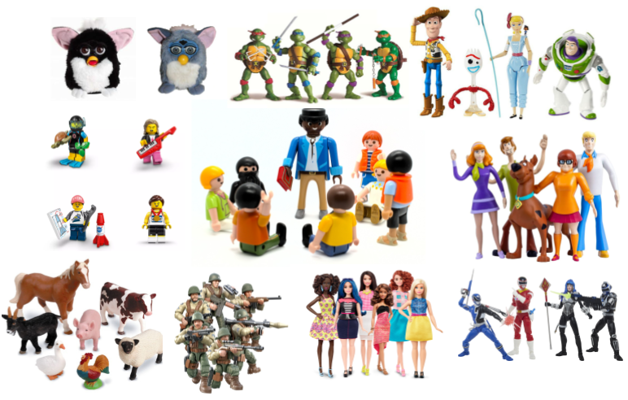

Introducing Mixed Effects Models
Preliminaries
- Open Rstudio, and create a new project for this course!!
- Create a new R Script or RMarkdown document (whichever you prefer working with) and give it a title for this week.
Some extra background reading
A Note on terminology
The methods we’re going to learn about in the first five weeks of this course are known by lots of different names: “multilevel models”; “hierarchical linear models”; “mixed-effect models”; “mixed models”; “nested data models”; “random coefficient models”; “random-effects models”; “random parameter models”… and so on).
What the idea boils down to is that model parameters vary at more than one level. This week, we’re going to explore what that means.
Throughout this course, we will tend to use the terms “mixed effect model,” “linear mixed model (LMM)” and “multilevel model (MLM)” interchangeably.
New Packages!
These are the main packages we’re going to use in this block. It might make sense to install them now if you do not have them already (note, the rstudio.ppls.ed.ac.uk server already has lme4 and tidyverse installed for you).
- tidyverse : for organising data
- lme4 : for fitting generalised linear mixed effects models
- broom.mixed : tidying methods for mixed models
- effects : for tabulating and graphing effects in linear models
- sjPlot : for plotting models
- lmeresampler : for bootstrapping!
- ICC : for quickly calculating intraclass correlation coefficient
- HLMdiag : for examining case diagnostics at multiple levels
install.packages(c("tidyverse","ICC","lme4","effects","broom.mixed","sjPlot","HLMdiag"))
# the lmeresampler package has had some recent updates. better to install the most recent version:
install.packages("devtools")
devtools::install_github("aloy/lmeresampler")Linear model refresh
Data: New Toys!
Recall the example from last semesters’ USMR course, where the lectures explored linear regression with a toy dataset of how practice influences the reading age of Playmobil characters:
](images/intro/reading.png)
Figure 1: USMR Week 8 Lecture
You can find a dataset at https://uoepsy.github.io/data/toyexample.csv containing information on 132 different toy figures. This time, however, they come from a selection of different families/types of toy. You can see the variables in the table below1.

| variable | description |
|---|---|
| toy_type | Type of Toy |
| toy | Character |
| hrs_week | Hours of practice per week |
| age | Age (in years) |
| R_AGE | Reading Age |
Recall that in the course last semester we learned all about the linear regression model:
\[ \begin{align}\\ & \text{for observation }i \\ & \color{red}{Y_i} = \color{blue}{\beta_0 \cdot{} 1 + \beta_1 \cdot{} X_{1i} \ + \ ... \ + \ \beta_p \cdot{} X_{pi}} + \varepsilon_i \\ \end{align} \]
(You might be more familiar with the notation of \(b\) rather than \(\beta\), but they’re the same thing here).
If we wanted to write this more simply, we can express \(X_1\) to \(X_p\) (our predictor variables) as an \(n \times p\) matrix (samplesize \(\times\) parameters), and \(\beta_0\) to \(\beta_p\) as a vector of coefficients:
\[ \mathbf{y} = \boldsymbol{X\beta} + \boldsymbol{\varepsilon} \quad \\ \text{where} \quad \varepsilon \sim N(0, \sigma) \text{ independently} \]
Read in the toy data from https://uoepsy.github.io/data/toyexample.csv and plot the bivariate relationship between Reading Age and Hrs per Week practice, and then fit the simple linear model: \[ \text{Reading Age}_i = \beta_0 + \beta_1 \cdot \text{Hours per week practice}_i + \varepsilon_i \]
Think about the assumptions we make about our model: \[ \text{where} \quad \varepsilon_i \sim N(0, \sigma) \text{ independently} \] Have we satisfied this assumption (specifically, the assumption of independence of errors)?
Try running the code below.
ggplot(data = toys_read, aes(x=hrs_week, y=R_AGE))+
geom_point()+
geom_smooth(method="lm",se=FALSE)Then try editing the code to include an aesthetic mapping from the type of toy to the color in the plot.
How do your thoughts about the relationship between Reading Age and Practice change?
Complete Pooling
We can consider the simple regression model (lm(R_AGE ~ hrs_week, data = toys_read)) to “pool” the information from all observations together. In this ‘Complete Pooling’ approach, we simply ignore the natural clustering of the toys, as if we were unaware of it. The problem is that this assumes the same regression line for all toy types, which might not be that appropriate:
Figure 2: Complete pooling can lead to bad fit for certain groups
No Pooling
There are various ways we could attempt to deal with the problem that our data are in groups (or “clusters”). With the tools you have learned in DAPR2, you may be tempted to try including toy type in the model as another predictor, to allow for some toy types being generally better than others:
lm(R_AGE ~ hrs_week + toy_type, data = toys_read)Or even to include an interaction to allow for toy types to respond differently to practice:
lm(R_AGE ~ hrs_week * toy_type, data = toys_read)This approach gets termed the “No Pooling” method, because the information from each cluster contributes only to an estimated parameter for that cluster, and there is no pooling of information across clusters. This is a good start, but it means that a) we are estimating a lot of parameters, and b) we are not necessarily estimating the parameter of interest (the overall effect of practice on reading age). Furthermore, we’ll probably end up having high variance in the estimates at each group.
Fit a linear model which accounts for the grouping of toys into their different types, but holds the effect of practice-hours-per-week on reading age as constant across types:
mod1 <- lm(R_AGE ~ hrs_week + toy_type, data = toys_read)Can you construct a plot of the fitted values from this model, coloured by toy_type?
(Hint: you might want to use the augment() function from the broom package)
What happens (to the plot, and to your parameter estimates) when you include the interaction between toy_type and hrs_week?
Introducing Multilevel Models
Multilevel Models (MLMs) (or “Linear Mixed Models” (LMMs)) take the approach of allowing the groups/clusters to vary around our \(\beta\) estimates.
In the lectures, we saw this as:
\[ \begin{align} & \text{for observation }j\text{ in group }i \\ \quad \\ & \text{Level 1:} \\ & \color{red}{y_{ij}} = \color{blue}{\beta_{0i} \cdot 1 + \beta_{1i} \cdot x_{ij}} + \varepsilon_{ij} \\ & \text{Level 2:} \\ & \color{blue}{\beta_{0i}} = \gamma_{00} + \color{orange}{\zeta_{0i}} \\ & \color{blue}{\beta_{1i}} = \gamma_{10} + \color{orange}{\zeta_{1i}} \\ \quad \\ & \text{Where:} \\ & \gamma_{00}\text{ is the population intercept, and }\color{orange}{\zeta_{0i}}\text{ is the deviation of group }i\text{ from }\gamma_{00} \\ & \gamma_{10}\text{ is the population slope, and }\color{orange}{\zeta_{1i}}\text{ is the deviation of group }i\text{ from }\gamma_{10} \\ \end{align} \]
We are now assuming \(\color{orange}{\zeta_0}\), \(\color{orange}{\zeta_1}\), and \(\varepsilon\) to be normally distributed with a mean of 0, and we denote their variances as \(\sigma_{\color{orange}{\zeta_0}}^2\), \(\sigma_{\color{orange}{\zeta_1}}^2\), \(\sigma_\varepsilon^2\) respectively.
The \(\color{orange}{\zeta}\) components also get termed the “random effects” part of the model, Hence names like “random effects model,” etc.
Fitting Multilevel Models
Introducing lme4
We’re going to use the lme4 package, and specifically the functions lmer() and glmer().
“(g)lmer” here stands for “(generalised) linear mixed effects regression.”
We write the first bit of our formula just the same as our old friend the normal linear model y ~ 1 + x + x2 + ..., where y is the name of our outcome variable, 1 is the intercept (which we don’t have to explicitly state as it will be included anyway) and x, x2 etc are the names of our explanatory variables.
With lme4, we now have the addition of __random effect terms)), specified in parenthesis with the | operator (the vertical line | is often found to the left of the z key on QWERTY keyboards).
We use the | operator to separate the parameters (intercept, slope etc.) on the LHS, from the grouping variable(s) on the RHS, by which we would like to model these parameters as varying.
Random Intercept
Let us suppose that we wish to model our intercept not as a fixed constant, but as varying randomly according to some grouping around a fixed center.
We can such a model by allowing the intercept to vary by our grouping variable (g below):
lmer(y ~ 1 + x + (1|g), data = df)
\[ \begin{align} & \text{Level 1:} \\ & \color{red}{Y_{ij}} = \color{blue}{\beta_{0i} \cdot 1 + \beta_{1} \cdot X_{ij}} + \varepsilon_{ij} \\ & \text{Level 2:} \\ & \color{blue}{\beta_{0i}} = \gamma_{00} + \color{orange}{\zeta_{0i}} \\ \end{align} \]
Random Slope
By extension we can also allow the effect y~x to vary between groups, by including the x on the left hand side of | in the random effects part of the call to lmer().
lmer(y ~ 1 + x + (1 + x |g), data = df)
\[ \begin{align} & \text{Level 1:} \\ & \color{red}{y_{ij}} = \color{blue}{\beta_{0i} \cdot 1 + \beta_{1i} \cdot x_{ij}} + \varepsilon_{ij} \\ & \text{Level 2:} \\ & \color{blue}{\beta_{0i}} = \gamma_{00} + \color{orange}{\zeta_{0i}} \\ & \color{blue}{\beta_{1i}} = \gamma_{10} + \color{orange}{\zeta_{1i}} \\ \end{align} \]
Estimation
Maximum Likelihood (ML)
Remember back to Week 10 of USMR, when we introduced the generalised linear model (GLM) we briefly discussed Maximum likelihood in an explanation of how models are fitted.
The key idea of maximum likelihood estimation (MLE) is that we (well, the computer) iteratively finds the set of estimates for our model which it considers to best reproduce our observed data. Recall our simple linear regression model of how practice (hrs per week) affects reading age: \[ \color{red}{ReadingAge_i} = \color{blue}{\beta_0 \cdot{} 1 + \beta_1 \cdot{} Practice_{i}} + \varepsilon_i \] There are values of \(\beta_0\) and \(\beta_1\) and \(\sigma_\varepsilon\) which maximise the probability of observing the data that we have. For linear regression, these we obtained these same values a different way, via minimising the sums of squares. And we saw that this is not possible for more complex models (e.g., logistic), which is where we turn to MLE.
To read about the subtle difference between “likelihood” and “probability,” you can find a short explanation here.

Figure 3: MLE

Figure 4: MLE for a more complex model
Restricted Maximum Likelihood (REML)
When it comes to estimating multilevel models, maximum likelihood will consider the fixed effects as unknown values in its estimation of the variance components (the random effect variances). This leads to biased estimates of the variance components, specifically biasing them toward being too small, especially if \(n_\textrm{clusters} - n_\textrm{level 2 predictors} - 1 < 50\). Restricted Maximum Likelihood (REML), however, separates the estimation of fixed and random parts of the model, leading to unbiased estimates of the variance components.
lmer() models are by default fitted with REML. This is better for small samples.
Comparing Models, ML & REML
When we compare models that differ in their fixed effects via comparing model deviance (e.g. the likelihood ratio), REML should not be used as only the variance components are included in the likelihood. Functions like anova() will automatically refit your models with ML for you, but it is worth checking.
We cannot compare (either with ML or REML) models that differ in both the fixed and random parts.
Model Convergence
For large datasets and/or complex models (lots of random-effects terms), it is quite common to get a convergence warning. There are lots of different ways to deal with these (to try to rule out hypotheses about what is causing them).
We will come back to these in more detail but for now, if lmer() gives you convergence errors, you could try changing the optimizer. Bobyqa is a good one: add control = lmerControl(optimizer = "bobyqa") when you run your model.
lmer(y ~ 1 + x1 + ... + (1 + .... | g), data = df,
control = lmerControl(optimizer = "bobyqa"))
Exercises
Toy Dataset
Recall our toy example data in which we might use linear regression to determine how practice (in hours per week) influences the reading age of different toy figurines. We have data on various types of toys, from Playmobil to Powerrangers, to Farm Animals.
toys_read <- read_csv("https://uoepsy.github.io/data/toyexample.csv")Using lmer() from the lme4 package, fit a model of practice (hrs_week) predicting Reading age (R_AGE), with by-toytype random intercepts.
Pass the model to summary() to see the output.
Sometimes the easiest way to start understanding your model is to visualise it.
Load the package broom.mixed. Along with some handy functions tidy() and glance() which give us the information we see in summary(), there is a handy function called augment() which returns us the data in the model plus the fitted values, residuals, hat values, Cook’s D etc..
ri_model <- lmer(R_AGE ~ hrs_week + (1 | toy_type), data = toys_read)
library(broom.mixed)
augment(ri_model)## # A tibble: 132 × 14
## R_AGE hrs_week toy_type .fitted .resid .hat .cooksd .fixed .mu .offset
## <dbl> <dbl> <fct> <dbl> <dbl> <dbl> <dbl> <dbl> <dbl> <dbl>
## 1 9.31 3.84 Furby 10.0 -0.701 0.122 7.75e-3 6.06 10.0 0
## 2 12.2 4.88 Toy Story 12.1 0.105 0.142 2.14e-4 7.26 12.1 0
## 3 8.08 3.48 Stretch A… 6.02 2.06 0.192 1.25e-1 5.64 6.02 0
## 4 9.08 3.68 Peppa Pig 6.05 3.03 0.126 1.52e-1 5.87 6.05 0
## 5 2.07 2.96 Lego Mini… 0.621 1.45 0.146 4.20e-2 5.04 0.621 0
## 6 10.2 3.71 G.I.Joe 11.9 -1.67 0.122 4.41e-2 5.91 11.9 0
## 7 8.05 3.73 Minecraft 7.97 0.0730 0.139 9.96e-5 5.94 7.97 0
## 8 11.6 4.59 Polly Poc… 9.99 1.60 0.172 6.42e-2 6.92 9.99 0
## 9 12.3 4.01 Star Wars 11.2 1.13 0.140 2.40e-2 6.25 11.2 0
## 10 5.06 4.37 Sock Pupp… 4.89 0.171 0.163 6.78e-4 6.67 4.89 0
## # … with 122 more rows, and 4 more variables: .sqrtXwt <dbl>, .sqrtrwt <dbl>,
## # .weights <dbl>, .wtres <dbl>Add to the code below to plot the model fitted values, and color them according to toy type.
(you will need to edit ri_model to be whatever name you assigned to your model).
augment(ri_model) %>%
ggplot(aes(x = hrs_week, y = ......
We have just fitted the model: \[ \begin{align} & \text{For toy } j \text{ of toy-type } i \\ & \color{red}{\textrm{Reading_Age}_{ij}} = \color{blue}{\beta_{0i} \cdot 1 + \beta_{1} \cdot \textrm{Practice}_{ij}} + \varepsilon_{ij} \\ & \color{blue}{\beta_{0i}} = \gamma_{00} + \color{orange}{\zeta_{0i}} \\ \end{align} \]
For our estimates of \(\gamma_{00}\) (the fixed value around which toy-type intercepts vary) and \(\beta_1\) (the fixed estimate of the relationship between reading age and practice), we can use fixef().
fixef(ri_model)## (Intercept) hrs_week
## 1.627422 1.154725Can you add to the plot in the previous question, a thick black line with the intercept and slope given by fixef()?
Hint: geom_abline()
Figure 6: Model fitted values
Figure 7: Summary model output
lmer(R_AGE~1 + hrs_week + (1|toy_type),
data = toys_read)
We’re going to map the parts of the plot in Figure 6 to the summary() output of the model in Figure 7. Match the coloured sections Red, Orange, Yellow and Blue in Figure 7 to the descriptions below of 6 A through D.
- where the black line cuts the y axis
- the standard deviation of the distances from all the individual toy types lines to the black lines
- the slope of the black lines
- the standard deviation of the distances from all the individual observations to the line for the toy type to which it belongs.
Can you now map those same coloured sections in Figure 7 to the mathematical terms in the model equation:
\[ \begin{align} & \text{Level 1:} \\ & \color{red}{ReadingAge_{ij}} = \color{blue}{\beta_{0i} \cdot 1 + \beta_{1} \cdot Practice_{ij}} + \varepsilon_{ij} \\ & \text{Level 2:} \\ & \color{blue}{\beta_{0i}} = \gamma_{00} + \color{orange}{\zeta_{0i}} \\ \quad \\ & \text{where} \\ & \color{orange}{\zeta_0} \sim N(0, \sigma_{\color{orange}{\zeta_{0}}}) \text{ independently} \\ & \varepsilon \sim N(0, \sigma_{\varepsilon}) \text{ independently} \\ \end{align} \]
Fit a model which allows also (along with the intercept) the effect of practice (hrs_week) to vary by-toytype.
Then, using augment() again, plot the model fitted values. What do you think you will see?
Plot the model fitted values but only for the Farm Animals and the Scooby Doo toys, and add the observed reading ages too.
Do this for both the model with the random intercept only, and the model with both the random intercept and slope.
Basketball/HRV
While the toy example considers the groupings or ‘clusters’ of different types of toy, a more relate-able grouping in psychological research is that of several observations belonging to the same individual. One obvious benefit of this is that we can collect many more observations with fewer participants, and account for the resulting dependency of observations.
Data: Raising the stakes
30 volunteers from an amateur basketball league participated in a study on stress induced by size and type of potential reward for successfully completing a throw. Each participant completed 20 trials in which they were tasked with throwing a basketball and scoring a goal in order to win a wager. The size of the wager varied between trials, ranging from 1 to 20 points, with the order randomised for each participant. If a participant successfully threw the ball in the basket, then their score increased accordingly. If they missed, their score decreased accordingly. Participants were informed of the size of the potential reward/loss prior to each throw.
To examine the influence of the type of reward/loss on stress-levels, the study consisted of two conditions. In the monetary condition, (n = 15) participants were informed at the start of the study that the points corresponded to a monetary reward, and that they would be given their total score in £ at the end of the study. In the reputation condition, (n = 15) participants were informed that the points would be inputted on to a scoreboard and distributed around the local basketball clubs and in the league newsletter.
Throughout each trial, participants’ heart rate variability (HRV) was measured via a chest strap. HRV is considered to be indirectly related to levels of stress (i.e., higher HRV = less stress).
The data is in stored in two separate files.
- Information on the conditions for each trial for each participant is stored in .csv format at https://uoepsy.github.io/data/basketballconditions.csv (data collected is detailed in the table below).
- Information on participants’ HRV for each trial is stored in .csv format, and can be downloaded from https://uoepsy.github.io/data/bballhrv.csv
| variable | description |
|---|---|
| stakes | Points at stake (e.g. size of reward |
| condition | Whether the participants are in the monetary condition or the reputation condition. In the monetary condition (labelled ‘money’), points = £. In the reptutation condition (labelled ‘kudos’), points = points on the scoreboard |
| sub | participant ID |
| throw | whether the participant successfully threw the ball in the basekt |
| trial_no | Trial number for each participant (each participant completed 20 trials) |
| success_rate | Success rate of throws at each trial |
The code below reads in and joins the two datasets together.
Think back to all the data wrangling skills you learned about back in USMR. Run bits of the code at a time to see what each bit does, and try to understand how it works.
bball <-
left_join(
read_csv("https://uoepsy.github.io/data/basketballconditions.csv"),
read_csv("https://uoepsy.github.io/data/bballhrv.csv") %>%
pivot_longer(trial_1:trial_20, names_to = "trial_no", values_to = "hrv")
) %>%
mutate(sub = factor(sub))
The Basketball/HRV research study is concerned with how the size and type of potential reward influence stress levels (as measured by heart rate variability):
How do size and type of reward/loss interact to influence levels of stress?
Remember to think about:
- what is our outcome variable of interest?
- what is the clustering?
- does size of reward vary within clusters, or between?
- does type of reward vary within clusters, or between?
Can you fit a linear mixed model to examine the effects of size and type of reward on HRV, and their interaction?
Tip: If you get an error about model convergence, consider changing the optimiser (see above)
What, no p-values?
You might notice that we don’t have any p-values! We’ll into the reasons for this a bit more at the start of next week’s lab, but Dan mentioned a few options in the lecture already:
- \(df\) approximations: approximate the degrees of freedom (allowing you to compute a p-value) by loading the lmerTest package and re-fitting your model
- likelihood ratio tests: conduct a model comparison between your model and a restricted model (a model without the parameter of interest), evaluating the change in loglikelihood. We can do this with
anova(model0, model1).
- construct bootstrapped confidence intervals: we’ll cover more about this next week, but we can easily get out some 95% CIs for model estimates by using
confint(model, method="boot").
Construct some bootstrapped confidence intervals for your fixed effects.
Then, using the sjPlot package, produce a plot of the interaction between size and type of reward on HRV. Before you get R to make your plot, can you predict what it is going to look like?
Image sources:
http://tophatsasquatch.com/2012-tmnt-classics-action-figures/
https://www.dezeen.com/2016/02/01/barbie-dolls-fashionista-collection-mattel-new-body-types/
https://www.wish.com/product/5da9bc544ab36314cfa7f70c
https://www.worldwideshoppingmall.co.uk/toys/jumbo-farm-animals.asp
https://www.overstock.com/Sports-Toys/NJ-Croce-Scooby-Doo-5pc.-Bendable-Figure-Set-with-Scooby-Doo-Shaggy-Daphne-Velma-and-Fred/28534567/product.html
https://tvtropes.org/pmwiki/pmwiki.php/Toys/Furby
https://www.fun.com/toy-story-4-figure-4-pack.html
https://www.johnlewis.com/lego-minifigures-71027-series-20-pack/p5079461↩︎